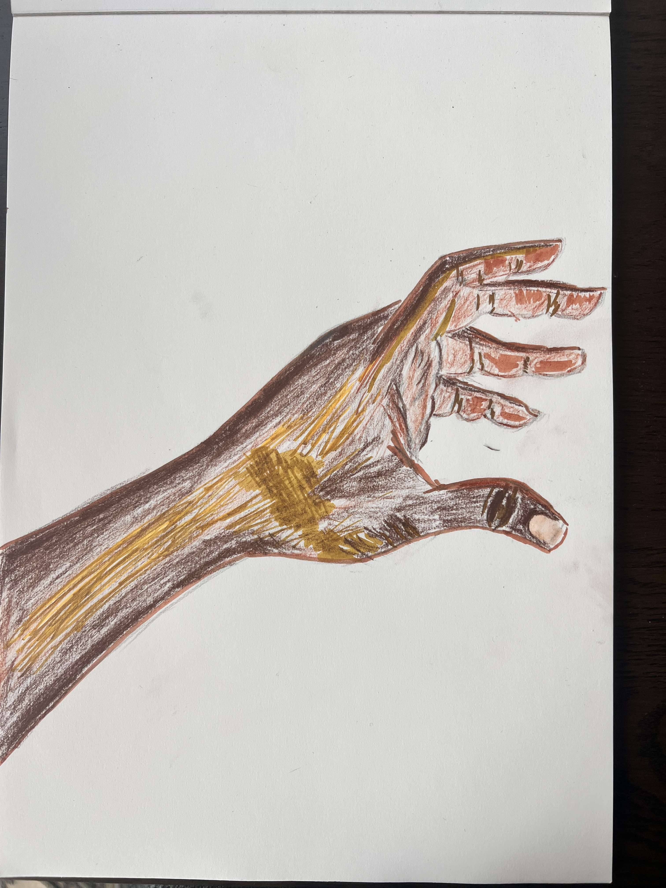
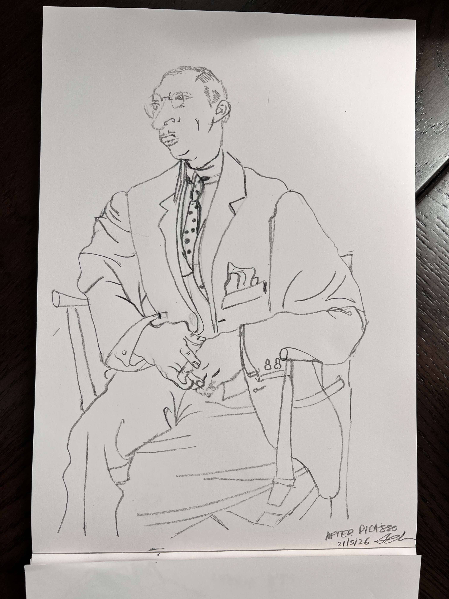
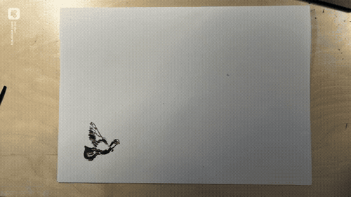
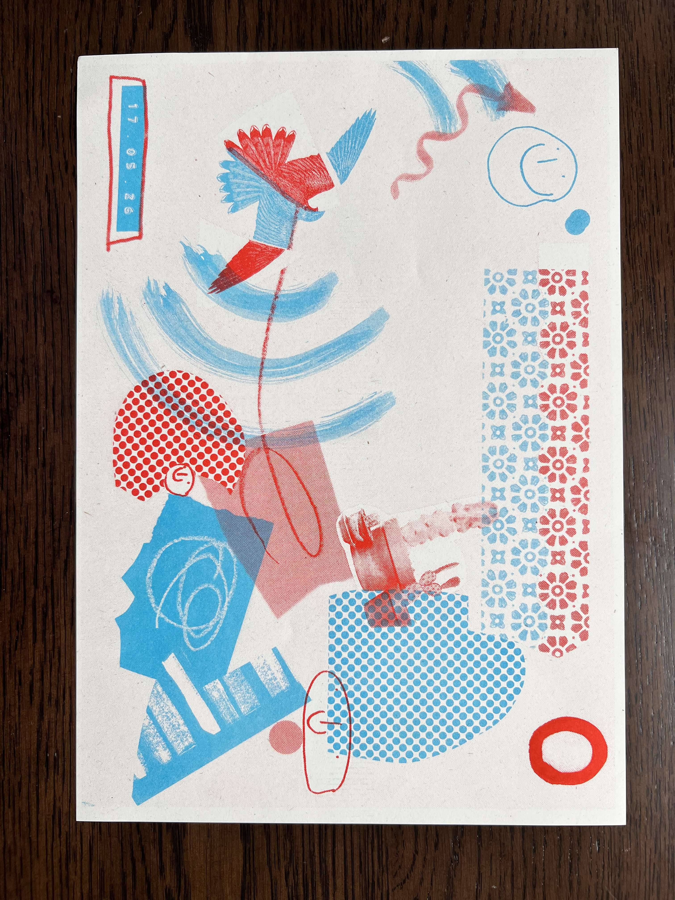
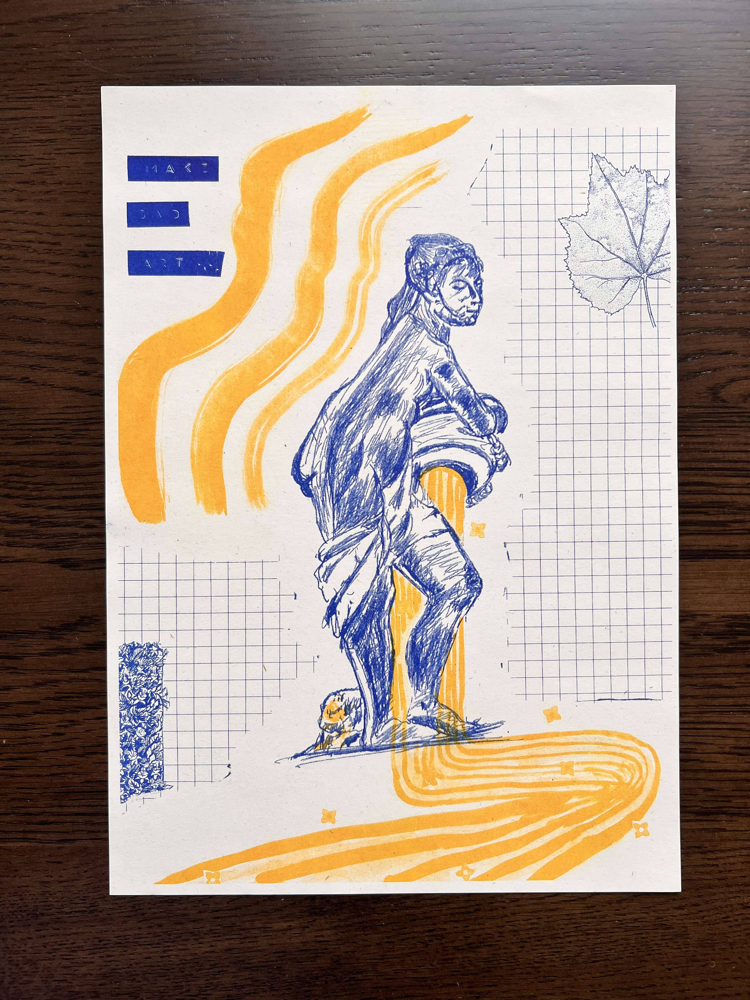

It has been a better week for my creativity. I don't think my effort has changed much. I've still showed up to practice just the same, but I've been luckier with the outcomes.


Learned to make this at the second animation class. Lots of fun.

What I discovered in the workshop is that the process of designing a Riso print is even more fun than the output. It is a delightfully analog process, basically involves making collages of any kind of 2-D material of your choice. You can write something, draw something, stick something cut out of a magazine, stick bits of pattern paper, make bold brushstrokes with a paintbrush - there is truly no limit.
The lovely thing about this process is how generous it feels.
It doesn't need you to be precise.
It doesn't need you to have everything mapped out in advance (although you can do that too)
It doesn't promise something will look how you imagine.
It invites you to play.
To show up, to experiment and see what emerges.
It promises that the outcome will always be interesting.


I've realized a few years ago that I liked hobbies that reward this type of experimentation and emergence. On a spectrum of my hobbies from precise to loose - Sewing, sashiko, embroidery etc. fall more on the precise end of the spectrum. Gardening, terrarium making, and Riso fall on the loose end of the spectrum. Feels a bit like yin and yang - Structure vs Flow
In the last embroidery workshop I took, I learned that I could explore embroidery in a looser or organic way. No master plan. Just mark making and exploring where the stitches might go.
On this journey of trying to find and flex my voice, realizing that I can shape my creative practice how I want feels refreshing and freeing. I can shape my practice in a way that feeds me AND challenges me.
Playing on the loose end of the spectrum doesn't mean doing a shoddy job. It just means that mistakes are undo-able. And in fact, mistakes can even become part of what I'm making.
I can have an overarching plan or vision, AND I am confident enough to let go of control and adapt when I hit an obstacle, or something unexpected emerges. Designing and doing up my flat brought this tension out a lot. Sometimes I would be obsessed about finding the exact shade of pink I imagined for a wall and I'm very glad I dug my heels in these moments despite how mad it felt. And sometimes I had to completely rethink a floor plan because of the size or style of a second hand piece of furniture that I loved would change how the room functioned. Initially, I struggled with this a lot. I learned, and am still learning, that being responsive and adaptable is not the same as 'giving up' on my vision.
Maybe the world needs more leaders who think in this way.
I do know that I need to do this unlearning and relearning for my own sake first. So I don't break under the weight of all toxic beliefs that I have absorbed without ever meaning to.
I started doing the drawing exercises I had planned. I have 2 completed. Hopefully can get into a habit of doing 2 or 3 a week. I hadn't planned on doing as much art during this break as I am doing. But I am really enjoying it. And it feels like its doing some important rewiring somehow.
Given its bank holiday weekend and there will be almost too much sunshine (I said almost), I give myself permission to rest. Read in parks. See friends. Spend time with Ajit who I've been neglecting a bit.
And keep the rhythm going - art, writing, workouts each at least twice a week.